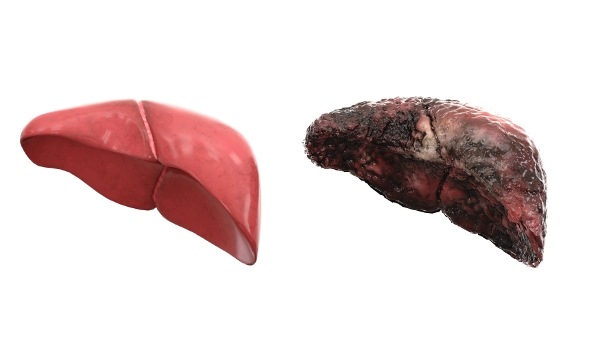
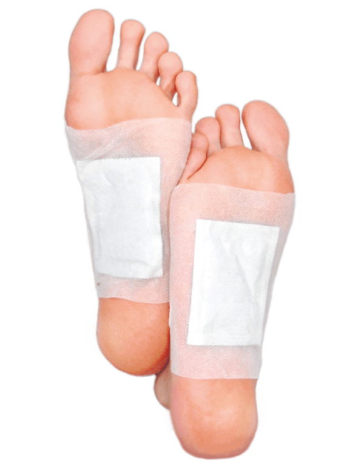

Hai almeno 1 di questi sintomi?
Sabato, 22 Agosto, 2020
RAPPORTO SPECIALE:

CON QUESTO METODO ESPELLERAI 2 KG DI TOSSINE MORTALI IN 1 NOTTE!
La scoperta della dott.sa Anne Seebald dimostra che l'antico metodo giapponese di detossificazione rapida dell'organismo rimuove le tossine, i metalli pesanti e le sostanze chimiche dannose in 1 sola notte.
I ricercatori annunciano: mai prima d'ora nella storia l'uomo è stato bombardato da così tante tossine e sostanze velenose. Pesticidi, conservanti, metalli pesanti (come alluminio o piombo), prodotti chimici domestici, gas di scarico, smog. Questa invasione di sporco e sostanze nocive sta rovinando la tua salute. Porta anche allo sviluppo di gravi disturbi, tra cui degenerazione delle articolazioni, diabete o morbo di Alzheimer. Secondo gli studi condotti dalla dott.ssa Seebald, le tossine sono una delle principali cause di obesità, mal di testa, cellulite e lesioni cutanee. Sei stanco, sensibile alle infezioni, hai problemi a dormire? È un segnale che tutto il tuo corpo è intasato da una miscela di tossine dannose che distruggono il tuo organismo dall'interno! Esiste però un metodo superefficace e sicuro per depurare il corpo da queste sostanze mortali durante 1 notte.
Espelli 2 kg di ACCUMULI TOSSICI sin dal primo utilizzo
La dott.sa Anne Seebald dell'Ohio Natural Medicine Institute da anni raccomanda i cerotti giapponesi originali che detossificano profondamente l'organismo. Lei stessa afferma: "Non esiste un metodo migliore per espellere le tossine dal corpo rispetto ai cerotti fito-detossificanti. Al giorno d'oggi, dobbiamo prenderci cura del nostro corpo, perché le sostanze chimichevelenose sono fondamentalmente ovunque: nelle verdure, nella frutta, nell'aria e persino nell'acqua! I nostri reni e il nostro fegato semplicemente non ce la fanno a ripulire l'organismo a questo ritmo. Di conseguenza, i depositi di tossine si accumulano nel corpo portando allo sviluppo di gravi disturbi. Di certo non smetteremo di respirare, mangiare o bere per proteggerci dalle tossine! Ecco perché chiunque abbia a cuore la propria salute dovrebbe disintossicare l'organismo con cerotti fitodetossificanti. Chiunque a cui raccomandi questo metodo, rimane scioccato quando dopo il primo uso vede quanti orribili veleni sono usciti dal corpo... Già dopo un solo uso dei cerotti, le tossine pericolose escono letteralmente dal tuo corpo - le espelli attraverso la pelle, l'apparato urinario e l'apparato digestivo. Sarai sorpreso di quante sostanze velenose stavano rovinando il tuo organismo dall'interno... Molte persone espellono addirittura 2 kg di tossine nelle prime 24 ore".
Nella comunità scientifica – dai fisioterapisti agli ambienti di laboratorio e accademici – tutti riconoscono che questa è una svolta scientifica nella lotta contro l'intossicazione dell'organismo. Confermato da test empirici e clinici indipendenti.
Solo negli Stati Uniti e in Giappone i cerotti fitodetossificanti sono stati testati già da oltre 90.000 persone. Questionari e sondaggi tra i consumatori hanno confermato che presentano 3 proprietà:
-
agiscono fino a 12 volte più velocemente rispetto alle compresse per eliminare le tossine,
-
ormai dopo 30 giorni di utilizzo liberano dai disturbi causati dalle tossine,
-
donano energia, eliminano i problemi di sonno e sovrappeso, migliorano la salute della pelle e la condizione generale dell'organismo e prolungano la vita di ben 17 anni.
Allo stesso tempo, stimolano l'ossigenazione e la nutrizione cellulare, oltre a purificare l'organismo dai metalli pesanti. Di conseguenza, liberano efficacemente da molti disturbi causati dalle tossine, tra cui artrite, mal di testa, sovrappeso e molti altri.
Guarda come si presenta il fegato di una persona avvelenata dalle tossine rispetto a quello di una persona sana:

fegato ben funzionante
fegato avvelenato dalle tossine
Visualizzazione creata dal team della dott.sa Seebald sulla base di ricerche condotte su un gruppo di 3472 volontari. Studi dimostrano che ben il 76% dell'umanità soffre di intossicazione epatica.
I cerotti fitodetossificanti ti aiuteranno per:

-
artrite
-
mal di testa
-
stanchezza cronica
-
problemi digestivi
-
allergie ed eruzioni cutanee
-
problemi della pelle, acne
-
dolori articolari e muscolari
-
raffreddori frequenti
-
sovrappeso e obesità
-
insonnia
-
caduta di capelli
-
gonfiore
-
stress, nervosismo, mancanza di concentrazione
-
problemi di memoria
-
dolori reumatici
-
pressione alta
-
problemi di circolazione
-
cellulite e smagliature
Ti sbarazzerai dalla costante stanchezza, salverai la tua salute e prolungherai la tua vita anche di 17 anni - effetto garantito da test medici
Ecco come la dott.sa Seebald spiega l'azione dei cerotti fitodetossificanti:
"In natura nulla accade senza un motivo. Proprio come un albero assorbe gli ingredienti vitali attraverso le foglie, le tossine accumulandosi nelle radici - così nell'uomo tutte le impurità e la sporcizia scendono fino in fondo. La natura sa che gli organi più importanti sono la testa, il cuore, i polmoni. Perciò li protegge, e cerca di spingere le tossine velenose verso il basso. Quindi si accumulano nelle parti inferiori delle gambe e dei piedi, ma ma immettendosi nel flusso sanguigno, danneggiando tutto l'organismo. Come mostrano le nostre ricerche e le più recenti conoscenze scientifiche, il modo più semplice per rimuovere le tossine è attraverso i piedi", afferma la dott.ssa Seebald.
"Il segreto dell'efficacia dei cerotti fitodetossificanti consiste nell'utilizzo di una miscela estremamente potente di sostanze purificanti naturali in modo concentrato - sui piedi. Perché quando siamo stanchi ci fanno male i piedi ? Perché l'artrite e l'artrosi attaccano prima i piedi e le ginocchia? Perché il comando centrale del nostro organismo ha deciso che è lì il posto più sicuro per immagazzinare le tossine che né i reni né il fegato non riescono a eliminare alla velocità necessaria. I giapponesi sanno bene che per sbarazzarsi dei disturbi devi purificare il corpo dalle tossine accumulate e alleggerire il lavoro dei reni" - spiega l'esperta.
"Soprattutto nel XXI secolo, il livello delle tossine nell'ambiente è così elevato che si depositano ovunque nel corpo umano - soprattutto:
-
nel cervello - causando dolori, vertigini, stanchezza e problemi di sonno;
-
nell'apparato digerente - causando disturbi allo stomaco, ulcere, problemi digestivi;
-
nelle ossa, causando artrite, reumatismi e osteoporosi;
-
nell'apparato circolatorio – esponendoci a problemi di pressione sanguigna, disturbi cardiaci e venosi;
-
nei muscoli - causando compressione, intorpidimento e dolore;
-
nel tessuto adiposo - causando gonfiore, aumento di peso e formazione di cellulite e smagliature;
-
sotto la pelle - causando allergie, cambiamenti della pelle, acne.
Come risulta dalla mia ricerca, l'uomo moderno può avere fino a 15 kg di tossine nel corpo, senza nemmeno rendersene conto! Ho incontrato molte volte persone obese, sempre stanche, con terribili cambiamenti della pelle e molti altri disturbi. Si sono lamentate del fatto che i costosi consigli degli specialisti non hanno portato risultati. E quanto sono rimasti sorpresi dopo aver scoperto che tutto è stato dovuto alle tossine e basta usare cerotti fitodetossificanti anche solo 1 volta per sentire un miglioramento significativo"- spiega la dott.ssa Seebald.
Ogni cerotto fitodetossificante è imbevuto di una potente miscela conosciuta in Giappone da secoli, che elimina le tossine. Si tratta di una combinazione sviluppata in laboratorio di aceto di legno, aceto di bambù, vitamina C e di sostanze ausiliarie a base di erbe. Sono stati preparati in modo tale da rimuovere rapidamente le tossine dall'organismo e inoltre bloccare l'accumulo di sostanze nocive in futuro.
L'utilizzo di questa soluzione brevettata consente di combattere numerosi disturbi e ristabilire l'equilibrio dell'organismo senza sosta durante il sonno. La miscela fitodetossificante penetra istantaneamente nella pelle e come un magnete estrae sostanze nocive dall'intero organismo . Tossine e metalli pesanti che avvelenano il nostro corpo vengono rimossi in un batter d'occhio. Gli organi e le cellule del nostro corpo vengono alleviati, iniziando così a funzionare più velocemente e in modo più efficiente. L'ossigenazione e la nutrizione cellulare dei tessuti danneggiati aumenta. La guarigione delle infiammazioni viene accelerata. Dolori, stanchezza e ipersensibilità scompaiono.
Per eliminare definitivamente i disturbi causati dalle tossine, è sufficiente applicare i cerotti fitodetossificanti ogni giorno prima di andare a dormire. Non importa se soffri di perenne affaticamento, insonnia, sovrappeso, raffreddori cronici, mal di testa o insonnia. Il problema verrà eliminato. Grazie alla dose di sostanze fitodetossificanti selezionate in modo sicuro, il trattamento può essere proseguito ininterrottamente per 30 giorni.
Liberi l'organismo dalle tossine e recuperi la salute in 30 giorni
Attenzione: non è tutto. Durante il trattamento, le sostanze disintossicanti penetrano in tutto il corpo e lo depurano attivamente dalle tossine, dai depositi e dai metalli pesanti 24/7. Raggiungono ogni cellula del corpo e ne staccano i composti tossici, che vengono successivamente escreti nelle urine e nelle feci.
Con ogni giorno di utilizzo di cerotti fitodetossificanti, gli effetti positivi si accumulano a livello cellulare. Dopo 30 giorni di trattamento, le tossine vengono rimosse in modo definitivo. L'efficacia dei cerotti fitodetossificanti è stata confermata anche da altri ricercatori: il dott. Mark Valbona del Baylor College of Medicine ha ridotto il dolore artritico nel 76% degli intervistati, il dott. Eric Weintraub del New York MedicalCollage, invece, ha combattuto l'insonnia cronica nel 90% dei casi, mentre il dott. Thinell del Chicago Institute for Health ha liberato l'89% dei pazienti da sovrappeso e obesità.
I cerotti fitodetossificanti funzionano sulla base degli antichi principi della medicina orientale. Il dott. Yamada di Tokyo dice:
"Nei piedi abbiamo una mappa di tutto il nostro corpo. In questo modo, agendo su un punto specifico del piede possiamo stimolare ed energizzare l'organo malato. Puoi anche verificare da solo: nel punto dove ci fa male, abbiamo un problema nel corpo. Con i cerotti avviene in modo simile: aree specifiche sul piede "raccolgono le tossine" da quegli organi e parti del corpo a cui sono collegati. Agli occidentali sembra magia, ma per noi è semplicemente una pratica salutare".
I ricercatori hanno testato l'efficacia dei cerotti fitodetossificanti su un gruppo di 122 persone di età compresa tra i 23 e i 75 anni. I partecipanti all'esperimento non hanno cambiato il loro stile di vita, la loro dieta o le loro abitudini. L'obiettivo del test era quello di verificare scientificamente se il nuovo metodo giapponese garantisse davvero l'eliminazione della maggior parte dei disturbi e il ripristino di una buona condizione di salute? Ecco i risultati del test:
-
Dai questionari risulta che i partecipanti si sono liberati da mal di testa, stanchezza e stress e hanno avvertito un'immediata ondata di energia dopo 1 sola notte di utilizzo dei cerotti.
-
Il 97% delle persone si è liberato da fastidiosi dolori reumatici e artritici in appena 8 minuti.
-
Il 94,9% degli intervistati dopo 3 settimane ha notato un calo di peso significativo (in caso di sovrappeso) e la scomparsa dei problemi cutanei.
-
Lo studio ha dimostrato che i cerotti fitodetossificanti hanno un effetto positivo su tutti gli apparati dell'organismo, in particolare su quello digestivo, nervoso, muscolare e urinario.
I resoconti documentati mostrano che i cerotti fitodetossificanti della dott.sa Seebald entusiasmano non solo gli scienziati, ma anche tutti coloro che li hanno provati. Probabilmente questo è il motivo per cui sono diventati rapidamente un metodo popolare per sbarazzarsi delle tossine e migliorare le condizioni di tutto il corpo. Sempre più persone vogliono provare in prima persona la sua efficacia.
Quando ho visto il rapporto sui test clinici sono rimasto davvero sorpreso. Da allora raccomando questo metodo a tutti. Grazie ad esso, si liberano del sovrappeso, di fastidiosi dolori e disturbi di lunga data che gli specialisti non erano riusciti a risolvere.
Gilberto Porrà – fisioterapista di Torino
La dott.ssa Seebald ha ricevuto così tante richieste da persone che volevano usare il suo metodo superveloce per sbarazzarsi delle tossine che il suo piccolo studio non riusciva a tenere il passo con la produzione. Ecco perché ha deciso di iniziare a collaborare con un'azienda in grado di produrre i cerotti detossificanti secondo le sue istruzioni. Li ha chiamati Start Detox 5600.
Poiché si tratta di un metodo scientifico, l'esperta ha affermato che sono solo i risultati a contare, non le promesse. Per questo puoi ricevere ciascun set di cerotti fitodetossificanti con la tripla garanzia di soddisfazione: di originalità, qualità e apprezzamento.
Si tratta della garanzia personale della dott.sa Seebald, confermata dal produttore. Grazie ad essa - non rischi nulla!
"La dottoressa Seebald non fa promesse, parla solo di fatti. Si tratta indiscutibilmente del metodo di purificazione dalla tossine più documentato che esista"
Max Bosworth, dottore in scienze della salute e pubblicista della rivista Worlds Health News
Ricorda – limitarsi a leggere anche del miglior metodo per eliminare il le tossine non ti aiuterà ad attenuare i tuoi disturbi. Pertanto, se vuoi sbarazzarti del problema e sconfiggere le tossine – prova questo metodo in prima persona! Se lo farai, ti convincerai che i risultati sono confermati non solo dai test, ma anche dalla tua storia. Ma c'è di più: gli effetti sono così veloci che non dovrai aspettare più di qualche ora. Se avessi iniziato a usare i cerotti Start Detox 5600 stasera, domani osserveresti già i primi effetti!
Ricorda, i cerotti fitodetossificanti Start Detox 5600 sono un metodo non invasivo per eliminare le tossine dall'organismo che non interferisce con alcun medicinale.
Dopo aver pubblicato questo articolo, con piacere annotiamo i successi che molte persone ottengono dopo aver utilizzato i cerotti Start Detox 5600. Se anche tu vuoi fare qualcosa per la tua salute e un perfetto benessere – non esitare! E poi non hai niente da perdere! Clicca sul link sottostante per ricevere Start Detox 5600, avendo la certezza di ottenere un prodotto originale che funziona davvero! Se rispetti la tua vita e la tua salute, clicca sul link sottostante.
Controlla se hai questi sintomi. Sono la prova dell'attacco all'organismo da parte delle tossine:
-
occhiaie, borse sotto gli occhi o gonfiore oculare
-
perdita dei capelli, pelle secca
-
allergia, eruzioni cutanee, acne
-
emicrania
-
dolori muscolari e articolari, fratture ossee
-
raffreddori frequenti o catarro
-
sovrappeso, obesità addominale
-
sovrappeso, obesità addominale
-
sbalzi di pressione
Opinioni degli utenti

"Ho 51 anni e un sacco responsabilità a casa e al lavoro. Solo un mese fa la testa mi faceva male ogni giorno. In più avevo una pelle in pessimo stato e gonfiore continuo, che mi faceva sembrare molto più grassa di quanto ero realmente. Ma quando ho usato questi cerotti, è cambiato tutto. Ho scoperto che il mio corpo era avvelenato dalle tossine. Ora mi alzo con grande vivacità, ho un sacco di energia e ho un aspetto molto migliore. La pelle è diventata liscia e radiosa, e il gonfiore scomparso senza lasciare traccia. È davvero spaventoso vedere quanto schifo esce dal corpo umano... È bello avere tutto alle spalle ormai."
Rosanna Valente (51 anni) di Trapani
"Lavoro nelle ristrutturazioni. Mia moglie ha iniziato a dirmi che ho sicuramente metalli pesanti e composti velenosi di vernice dentro di me. Non sapevo come eliminarli. Inoltre, come potevo essere sicuro che avesse ragione? Ma quando ho sentito parlare di questi cerotti ho pensato che avrei potuto provare. Beh, non mi aspettavo una cosa simile dopo il primo utilizzo! Nero come la pece. E funziona, perché mi sento molto meglio. Il fiato corto mi è passato, non ho più la tosse. Persino la spalla ha smesso di farmi male. E quando ho fatto gli esami periodici si è verificato che sono sano come un pesce! Dopo il successivo utilizzo i cerotti sono grigi, si vede che c'è meno sporcizia nel corpo. Un'altra cosa positiva è che posso bere di più con i miei amici, e al mattino non mi fa male la testa!"
Mariano Chioli (46 anni) di Bari
Commenti
Per scrivere un commento registrati >>
Teresa Micheli
giovedì 20.08.2020
Ho un problema alla colonna vertebrale e adesso in più alle anche... Ho compilato il modulo. Non vedo l'ora di iniziare ad usarle
Lucia Vecchiotti
giovedì 20.08.2020
seguo da molto tempo le varie novità su come eliminare il sovrappeso in modo sicuro. ho anche sentito mia madre raccontare qualcosa di questo metodo recentemente, perché una sua amica si è liberata di un'allergia che aveva da molti anni! devo assolutamente provarlo, grazie.
Anna Mattei
giovedì 20.08.2020
Sì, questo è un prodotto davvero incredibile! La mia migliore amica usa Start Detox 5600 e non le fanno più male le gambe (lavora in piedi e ne sffriva tanto)... non potevo crederci e ho dovuto un po' rovistare in giro per approfondire l'argomento da sola ed è così che ho trovato questo articolo.
Claudia Matarri
giovedì 20.08.2020
Combatto da una vita con il sovrappeso e spero che finalmente questo mi possa aiutare. Ho compilato questo modulo e mi sono iscritta in piscina. Spero di sconfiggere questo terribile grasso entro la fine dell'anno
Alice Del Grosso
giovedì 20.08.2020
Ero alla ricerca di metodi affidabili contro il dolore senza prendere pastiglie, perché mio marito con quelle si è rovinato lo stomaco, grazie per l'aiuto!
Ma Ra
giovedì 20.08.2020
Sentite me, questa roba è spaziale!!!!!!! 4 anni fa ho iniziato a ingrassare come un bue e non funzionava niente, diete digiuni esercizi niente!! Sono andata dal medico per farmi vedere la tiroide ma non c'era niente nessuno aveva la più pallida idea del perché ingrassassi così!!!!1 Avevo un aspetto inguardabile, gelatina cellulite grasso dappertutto, e alla fine ho provato questi cerotti per disperazione. Mi hanno salvato! È venuto fuori che stavo ingrassando PER LE TOSSINE - NON CI AVREI MAI CREDUTO NELLA VITA! E COSÌ HO INIZIIATO A DIMAGRIRE DI 4 KG ALLA SETTIMANA IN TOTALE 25 E MI SENTO 100 VOLTE MEGLIO CONSIGLIO A TUTTI
Guido Vincenzi
giovedì 20.08.2020
Un mio collega ha usato questi cerotti qualche tempo fa e me li ha consigliati. Mi sono iscritto a questo club e ho ricevuto il pacco in 3 giorni (anche se non ho beccato questo sconto, peccato). Finora i risultati sono incredibili - l'acne che ho da anni ha iniziato sta sparendo e mi sento meglio ogni giorno! Non vedo l'ora che arrivino la 3 e 4 settimana.
Michela Badel
giovedì 20.08.2020
Adoro questi cerotti perché non funziona altro su di me. Caffè o diete... ero sempre stanca. Non potevo crederci quando dopo 1 sola notte ho sentito quella botta di energia!!!
Cecilia Fiore
giovedì 20.08.2020
per me funziona a meraviglia! proprio come mi aspettavo. Non è stato difficile, e ora vorrei che tutti sapessero che funziona davvero
Paola Baldini
giovedì 20.08.2020
Tutto quello che scrivo qui è una fiaba. È difficile da credere. Le ho usate e in 3 settimane i miei dolori addominali sono scomparsi definitivamente! Mia madre le usa da 3 giorni e non soffre più di dolori muscolari e articolari
Patrizia Nao
giovedì 20.08.2020
Ho già scritto qui una volta, ma sono tornata per raccontare come è andata! Prima di tutto, il dolore a pancia e gambe è sparito, in più mi sono liberata delle tossine per cui ho perso 5 chili. I miei risultati parlano da soli. Start Detox 5600 sono in grado cambiare la vita in meglio. Grazie!
Francesco Sapone
giovedì 20.08.2020
Ho 28 anni e raffreddori e catarro continui non mi lasciano vivere Ho una vita attiva, ma non voglio farmi limitare dai malanni. Oggi inizio e spero che questo metodo funzioni su di me. Tenete le dita incrociate!
Magda Pozzerro
giovedì 20.08.2020
Sto seguendo il trattamento con questi cerotti. Posso solo dire che con me ha funzionato. Mi aiuta con il sovrappeso - sono dimagrita già di 7 kg... E non li rivoglio indietro! Ho più energia, dormo tranquilla tutta la notte, non ho paura del futuro ecc. - Questi sono solo alcuni dei vantaggi. Posso dire con certezza che essere una persona magra e sana è una sensazione fantastica.
Lili Ana
giovedì 20.08.2020
Uso i cerotti da una settimana e mi sento alla grande, un sollievo indescrivibile... non ho alcun effetto collaterale o roba del genere... quindi per me è la cosa migliore che esista... ho sprecato così tanti soldi in vari metodi, integratori e trattamenti che non proverò più nient'altro...
Carla Giovannoni
giovedì 20.08.2020
Oggi è il mio ottavo giorno con i cerotti e ho già dimenticato che cos'è il mal di testa, oltre ad aver migliorato la circolazione :)
Silvia Lupi
giovedì 20.08.2020
Sto usando i cerotti fitodetossificanti da 3 settimane e mi sento bene, ho anche tantissima energia e il dolore non mi dà più fastidio. Vi auguro buona fortuna!
Martina Slavi
giovedì 20.08.2020
Fino a poco tempo fa non avevo mai sentito parlare di questo metodo. Oggi è il mio sesto giorno di utilizzo. Non ho più paura andare in montagna perché so che il dolore non mi fermerà... ho anche più forza e i miei risultati sono migliorati
Alessandra Drabbassi
giovedì 20.08.2020
Ho approfittato di questo discount club per ottenere Start Detox 5600. Volevo eliminare il dolore e il gonfiore alla schiena, alle gambe e alle articolazioni, perché mi aspetta un compito importante: diventerò una nonna, quindi devo essere in forma al 100%! Gli effetti per me sono fenomenali, dopo alcuni giorni il dolore è sparito e il dolore diminuito. In più la mia pelle è migliorata perché la dermatite atopica si è attenuata
Daiana Capriotti
giovedì 20.08.2020
Da quello che so quest cerotti fitodetossificanti sono un metodo che non solo funziona, ma è anche completamente sicuro. Probabilmente è meglio non usarli per più di 40 giorni di fila, ma non credo che qualcuno le usi in questo modo. Penso che per le persone su cui i metodi tradizionali non fanno effetto e che stanno cominciando ad avere problemi di salute dovuti all'assunzione di medicinali chimici, possa essere un'alternativa promettente
Laura Boschi
giovedì 20.08.2020
Puoi dire quello che vuoi sull'efficacia di Start Detox 5600. Per me è importante solo sapere se in questo modo posso dire addio al mal di testa o meno. E si dà il caso che questi cerotti mi abbiano aiutato parecchio
Graziana Bianconi
giovedì 20.08.2020
Questo prodotto è fenomenale! Viaggio molto e devo prendermi doppiamente cura della mia salute. E Start Detox 5600 fanno un eccellente lavoro
Mariella Agora
giovedì 20.08.2020
Ho appena finito di usare i cerotti fitodetossificanti e mi sento a meraviglia. Ho provato diverse tecniche per liberarmi dal dolore, e con questi non ho dovuto nemmeno fare iniezioni o esercizi vari. Non ho fatto altro che iniziare ad applicarli per la notte e il dolore è scomparso da solo
Licia Verseni
giovedì 20.08.2020
Va bene, sto aspettando il pacco, a breve vi faccio sapere gli effetti :)
Angela Rosati
Ho visto i risultati di questi test sul giornale, sono davvero sorprendenti. Ogni mese sto malissimo perché mi gonfio come un pallone e mi fa male la pancia per via del ciclo, quindi proverò di sicuro!! grazie per l'info!!